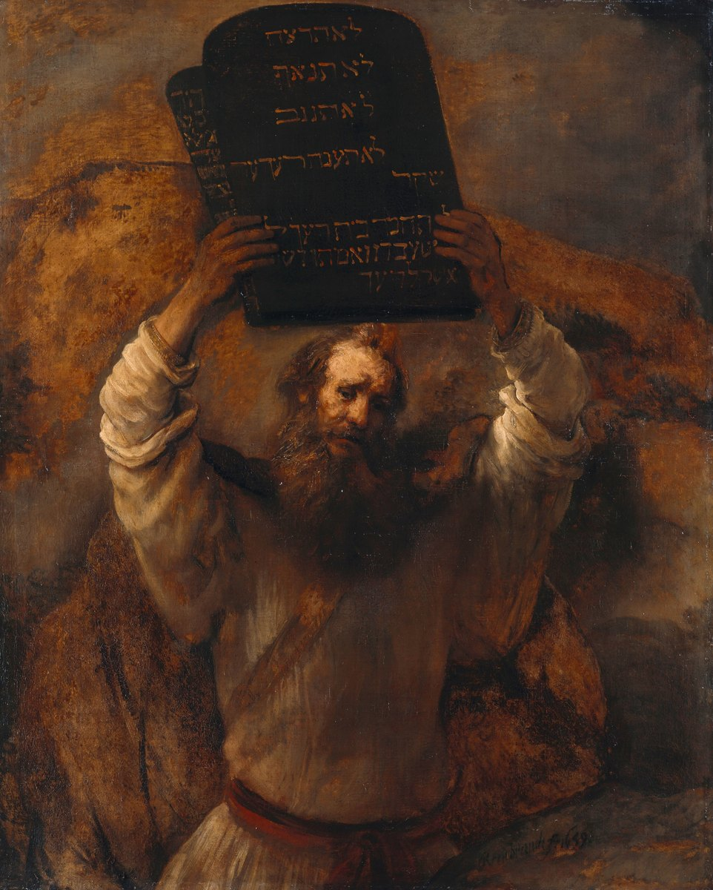

Exodus 20 — The Mister Translation

⚠ Read the tablet. Rembrandt painted the Hebrew, and he painted it accurately. The four lines you can see, top to bottom, are lo tirtzach, lo tin’af, lo tignov, lo ta’aneh be-re’akha ed shaqer — do not kill, do not commit adultery, do not steal, do not answer against your neighbour as a false witness — with the coveting clause running on below. That is the SECOND tablet. The first one is the slab standing edge-on at the left, turned away from us, its text a sliver you cannot read.
Which is a fair picture of this chapter’s problem. The commandments everyone agrees how to count are the legible ones. The argument is entirely about the tablet you cannot see — whether the opening declaration is itself a commandment, whether images are a separate command or part of the one about other gods. Three traditions divide those five differently and all arrive at ten.
And the top line, the largest and clearest thing in the painting, is the one this translation had to make a decision about: lo tirtzach.
One more thing. The Berlin museum calls this Moses Smashing the Tablets of the Law, and the pose will support that reading — arms up, about to bring them down, which would make it Exodus 32 and not this chapter at all. Others read the same gesture as presentation: lifting the law up so a crowd can see it. Rembrandt gives no crowd, no golden calf, and no answer. The face is doing something too complicated to label from the outside.
{kind=link}
Translator’s Notes
1–2 (English 1–3) — ⚠ How many commandments, and where do they divide?
Before a word of it: the Hebrew does not number the commandments, and it does not divide them into verses the way your Bible does. This page follows the Hebrew, so it has 22 verses where English Bibles have 26 — the small grey markers give the English number for each line.
⚠ And the same Hebrew is divided into ten three different ways. The text is identical in all three; only the counting differs:
Jewish. The first is “I am Jehovah your God, who brought you out of Egypt” (v2a) — a declaration, not a command. “No other gods” and “no carved image” are then the second together. Coveting is one.
Catholic and Lutheran. “I am Jehovah” is a preface, not counted. “No other gods” and the image clause are the first together — so there is no separate commandment against images. To reach ten, coveting splits in two: the neighbour’s wife, and then his household.
Reformed, Anglican, Orthodox. “No other gods” is the first and the image clause stands alone as the second. Coveting stays one.
So the question “what is the second commandment?” has three correct answers depending on who is counting, and the difference is not trivial: one tradition has a standalone prohibition of images and another does not. This library prints the Hebrew and the divisions the scribes actually marked (see the next note), and takes no vote on the numbering.
Verse 2’s al panai is literally “before my face” — which can mean in preference to me, in my presence, or in defiance of me. The versions choose; KJV “before me,” which keeps the ambiguity better than most.
3–5 (English 4–6) — The carved image, and a divine adjective
Pesel is specifically something carved or hewn — KJV “graven image,” NWT “carved image,” RV «imagen». Whether the prohibition covers images of Jehovah or only images of other gods is exactly the question the numbering traditions disagree about, and the Hebrew syntax permits both.
El qanna (v4) is usually “a jealous God,” and the English word has drifted toward pettiness in a way the Hebrew has not: the root is about zeal and about a claim that will not be shared. “Impassioned” and “zealous” are both defensible; nothing on the shelf tries them.
And the verb in “visiting the iniquity of the fathers” is paqad — the same attending to that this library met at Jeremiah 29:10, where it was favourable. It is a bookkeeping word: God attends to an account. The same verb, opposite outcomes.
6 (English 7) — “Take the name in vain” is not about swearing
The verb is nasa, to lift up or carry — not to speak. And la-shav is “for emptiness,” for what is worthless or false. NWT is the most literal on the shelf: “you must not take up the name of Jehovah your God in a worthless way.”
⚠ That matters, because “taking the name in vain” is popularly read as a rule about profanity. The Hebrew idiom is closer to bearing the name — carrying it as one who belongs to it — and doing so emptily. On that reading the commandment is aimed less at what you say in traffic than at claiming God’s name for what is false: false oaths, and false representation. It is not settled, and the text above keeps the literal verb so the question stays open.
7–10 (English 8–11) — “Remember” here, “observe” in Deuteronomy
The sabbath commandment appears twice in the Bible and the two versions do not match. Here it is zakhor, remember; at Deuteronomy 5:12 it is shamor, keep or observe. And the reasons differ too: here (v10) the ground is creation — God rested on the seventh day; there it is the exodus — you were slaves in Egypt.
⚠ Jewish tradition resolves this by holding that both words were spoken in a single utterance, which is why the Sabbath hymn Lekhah Dodi sings shamor ve-zakhor be-dibbur echad. That is a theological answer to a textual observation, and it is worth knowing that the observation came first.
Note who the commandment actually binds: it lists the son, the daughter, the male and female slave, the animal and the resident alien inside your gates. It is addressed to a householder, and most of it is about people who are not him.
11 (English 12) — The only one with a reason attached
“Honour your father and your mother” is the only commandment in the list that carries a promise — long days on the ground. And kabbed is from the root for weight: to honour is to give someone weight, to treat them as substantial. The opposite verb, qalal, is to make light.
12 (English 13–16) — ⚠ “Thou shalt not kill” or “murder”? And four commandments in one verse
First, the shape. What English Bibles print as four verses is one verse in the Hebrew — and the scribes marked the divisions anyway, with a setumah after each clause. Those are the {ס} marks in the Hebrew column above. So the manuscript tradition does separate these four, just not with verse numbers, and the divisions are older than the numbering.
⚠ Now the word. The Hebrew is lo tirtzach, and ratzach is not the general word for killing. That is harag, which does not appear here. Ratzach is narrower: it is the verb used throughout Numbers 35 of the manslayer who kills and flees to a city of refuge, covering both deliberate killing and what we would call manslaughter. It is not used of killing in war, of capital punishment carried out by a court, or of animal slaughter.
The shelf splits three to one. KJV “Thou shalt not kill,” ASV the same, and RV «No matarás» — all broad. NWT alone narrows it: “You must not murder.” The text above follows the narrower sense, because that is what the word does elsewhere in the Torah.
⚠ And the stakes are not academic. Read as “kill,” the commandment has been used to argue against capital punishment and war; read as “murder,” it plainly does not reach them — and the same book that contains it prescribes execution in the very next chapter. That is an argument about the Hebrew, and it should be had in the open rather than settled by a translation choice a reader cannot see.
The fourth clause is worth a glance too: not “do not lie” but do not answer against your neighbour as a false witness — a courtroom rule about testimony, not a general one about truthfulness.
13 (English 17) — Coveting, and the verse that has to split to make ten
Chamad is desire that reaches for a thing — it is what the tree looked like in Genesis 3:6 (“desirable to make one wise”) and what Achan does in Joshua 7:21 before he takes. Whether it names an inward state or the beginning of an action is genuinely argued.
⚠ And this single Hebrew verse is where the Catholic and Lutheran numbering has to find its tenth commandment, dividing the neighbour’s wife from the neighbour’s household. Note that the Hebrew here lists the house first and the wife second — while Deuteronomy 5:21 reverses them, putting the wife first and using a different second verb. A tradition that divides this verse has to decide which order it is dividing.
14–17 (English 18–21) — The people saw the thunder
Verse 14 says the people were seeing the thunderings — ro’im et ha-qolot, literally seeing the sounds. Every version keeps it and it is not an error: the Hebrew is deliberately synaesthetic, and later Jewish commentary makes much of it. KJV “saw the thunderings.”
And the chapter ends its narrative on a fine reversal: the people stand at a distance and Moses goes toward the araphel — the thick darkness — where God was. Not into light.
18–22 (English 22–26) — The altar law, and a very old rule about tools
The commandments are followed immediately by instructions for an altar, and they are strikingly plain: earth, or unworked stone. ⚠ “If you have swung your tool over it, you have profaned it” (v21) — the iron that shapes the stone disqualifies it. The reasoning is not given. It sits oddly beside the elaborate tabernacle specifications a few chapters later, and the tension is usually read as two sources.
And verse 22’s rule against steps, so that nakedness is not exposed on the altar, is the sort of practical, physical legislation that gets left out of summaries of this chapter.
Patterns worth carrying forward.
⚠ The Hebrew does not number the commandments — and the same text is divided into ten three different ways. Jewish: “I am Jehovah your God” is the first, and the image clause joins “no other gods.” Catholic and Lutheran: no separate image commandment at all, and coveting splits in two to reach ten. Reformed, Anglican, Orthodox: images stand alone as the second, and coveting stays one. So “what is the second commandment?” has three correct answers, and the difference is not cosmetic — one tradition has a standalone prohibition of images and another does not. No vote is taken here.
⚠ What the scribes did mark. The verse divisions are late, but the manuscripts carry their own: a setumah after each of the four short commandments in verse 12, printed in the Hebrew column above. So the tradition separates murder, adultery, theft and false witness — it just does not number them. This page has 22 verses where English Bibles have 26, because English splits what the Hebrew joins; the grey markers give the English number for every line.
⚠ “Thou shalt not kill” or “murder”? The Hebrew is lo tirtzach, and ratzach is not the general word for killing — that is harag, which does not appear in this chapter. Ratzach is the verb used throughout Numbers 35 of the manslayer who flees to a city of refuge, and it is not used of war, of judicial execution, or of slaughtering animals. KJV, ASV and RV all render it broadly (“kill”, «matarás»); only NWT narrows it to “murder.” The stakes are real — the broad reading has been used to argue against capital punishment and war, and the same book prescribes execution in the next chapter — which is why the argument belongs in the open rather than inside an invisible translation choice.
⚠ “Taking the name in vain” is probably not about swearing. The verb is nasa, to lift up or carry, not to speak; la-shav is “for emptiness.” The idiom is closer to bearing the name — carrying it as one who belongs to it — and doing so emptily, which points at false oaths and false representation rather than at profanity. NWT is the most literal on the shelf. Kept literal here so the question stays open.
⚠ The two Decalogues differ. Here the sabbath command is zakhor, remember, grounded in creation; at Deuteronomy 5 it is shamor, observe, grounded in the exodus. Jewish tradition holds both were spoken in one utterance — a theological answer to a textual observation, and worth knowing that the observation came first.
⚠ Where this happens, nobody knows. The chapter opens with “God spoke all these words” and never names the place; the mountain is Sinai, from chapter 19. Its location is genuinely unidentified — the traditional peak in the southern Sinai peninsula was fixed by monks in the fourth century, many centuries after the event, and serious cases have been made for north-western Arabia and for the Negev. Deuteronomy calls the same mountain Horeb.
Renderings chosen. “Murder” at v12, the narrower sense, because that is what ratzach does elsewhere in the Torah — a choice, and the note says so. “Before my face” at v2, which can mean in preference to me, in my presence or in defiance of me. “Attending to” for paqad at v4 — the same bookkeeping verb this library met at Jeremiah 29:10, where the outcome was favourable. And “seeing the thunderings” at v14, which is what the Hebrew says and is deliberately synaesthetic.
Worth not skipping. The sabbath command binds a householder and is mostly about other people — son, daughter, male and female slave, animal, and the resident alien inside your gates. The false-witness clause is a courtroom rule about testimony, not a general rule about lying. And the chapter ends with Moses walking toward the thick darkness, not into light.
⚠ A note on order: the Ten Commandments were translated ahead of the book’s own sequence — the most-searched chapter in the book — and the chapters around them (Exodus 15–19 before, the Mishpatim of 21–23 after) have since filled in on both sides.